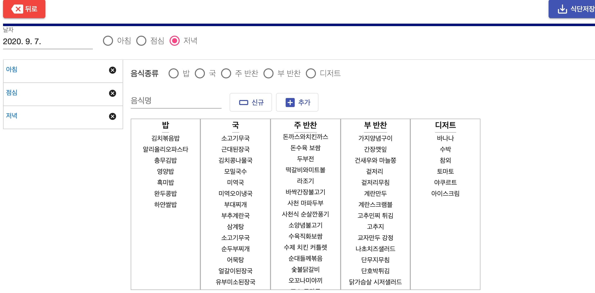
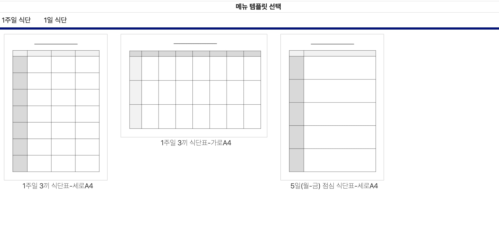
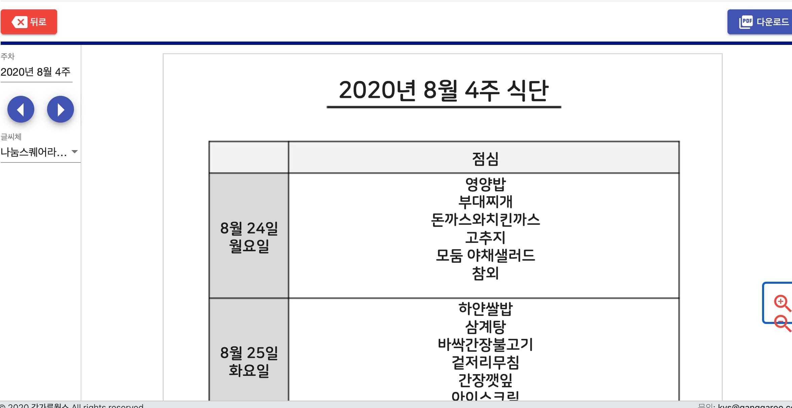
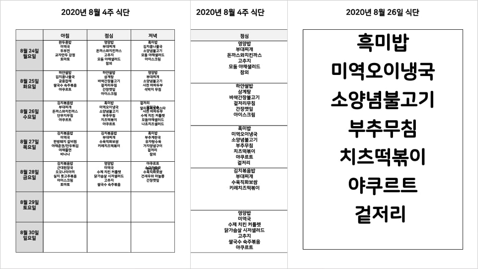

본 서비스를 이용하시면.
-
구내식당, 한식뷔페, 함바집에서 간편하게 식당식단을 관리 할 수 있습니다.
-
쉽게 1주일 메뉴를 구성 할 수 있습니다.
-
식단표가 다양한 템플릿이 있습니다. (템플릿은 계속 추가됩니다.)
-
쉽게 출력할 수 있어서 메뉴관리가 아주 심플합니다.
-
메뉴등록 - 식단등록 - 템플릿 선택 - 출력 순으로 이용 할 수 있습니다.
-
푸파 서비스 이용하기
1. 간편하게 식단을 등록할 수 있습니다.

-
arrow_right일별로 식별 식단을 빠르고 쉽게 등록합니다.
-
arrow_right메뉴는 밥, 국, 주반찬, 부반찬, 디저트로 구분합니다.
-
arrow_right아침, 점심, 저녁 별로 식단에 구분 별로 메뉴를 클릭하여 등록합니다.
-
arrow_right기존에 없는 메뉴는 새로 추가하여 사용합니다.
2. 원하는 형식의 템플릿 을 선택하세요.

-
arrow_right1주일 식단, 1일 식단을 선택합니다.
-
arrow_right출력을 원하는 식단 형태를 선택합니다.
-
arrow_right원하시는 디자인이나 템플릿이 있다면 문의 하시기 바랍니다.
4. 미리보고 pdf 형태로 추출합니다.

-
arrow_right프린트 할 떄와 동일한 디자인으로 보여집니다.
-
arrow_right일자를 전주/차주, 전일/내일 로 바꿔서 확인할 수 있습니다.
-
arrow_right완료하면 pdf 파일의 메뉴판을 다운로드 합니다.
5. pdf 파일로 메뉴를 출력합니다.

-
arrow_right바로 출력하여 사용하시면 됩니다.
-
arrow_right변경 시마다 새로 출력하셔서 꺠끗하게 사용하세요.
-
arrow_right여러가지 활용분야가 많습니다.
vertical_align_top